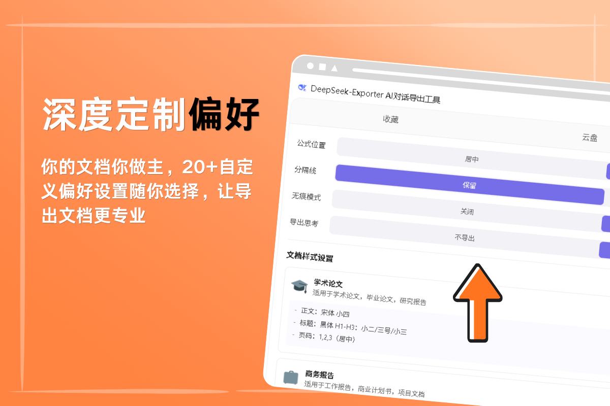
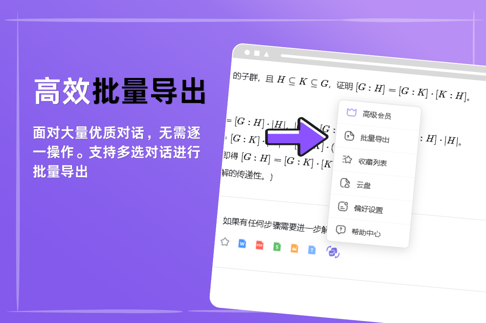
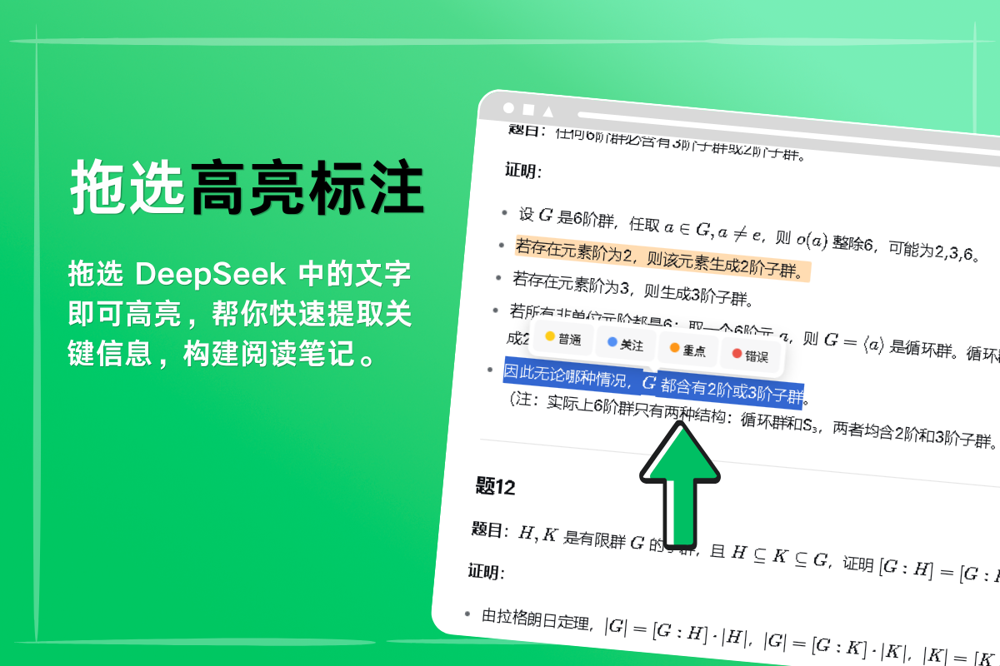

选择你的浏览器，一键安装
全面支持主流浏览器，无论你常用哪一款，都能获得一致的流畅体验。
不同浏览器的安装方式略有差异，若商店安装失败，可下载离线安装包手动加载。
DeepSeek Exporter 是专为 DeepSeek 打造的效率插件。完美还原代码高亮、LaTeX 公式与表格层级。支持 Word、PDF、Markdown 等 7 种格式导出，让你的 AI 对话秒变专业文档。
查看功能演示 →全面支持主流浏览器，无论你常用哪一款，都能获得一致的流畅体验。
不同浏览器的安装方式略有差异，若商店安装失败，可下载离线安装包手动加载。
完整保留代码高亮、LaTeX 公式对齐、复杂表格与标题层级，导出即定稿，告别格式错乱。
不仅导出答案，DeepSeek的“深度思考”过程也能一键打包带走，不漏掉任何逻辑推演。
从高亮标注、本地收藏到私密云盘，打造专属于你的 DeepSeek 第二大脑。
为深度使用 DeepSeek 的你量身打造
一键将 DeepSeek 对话转化为 Word (.docx)、PDF、Excel、HTML、ipynb、JSON、PNG 格式。无论你是写报告、做笔记还是做数据分析，总有一款格式适合你。
你的文档你做主。自定义文档样式，调整 LaTeX 公式对齐（居中/居左），一键删除多余的分隔线与 Emoji 表情，甚至开启自动修复 Markdown 格式错误，让导出文档更专业。

DeepSeek 的思考过程充满了启发性。开启该功能，你可以将“深度思考”模式下的推理过程与最终回答一并导出，绝佳的复盘与学习资料。
面对大量优质对话，无需逐一操作。支持多选对话进行批量导出，极大提升整理效率，专为重度 AI 使用者设计。

像阅读电子书一样阅读 AI 的回答。拖选 DeepSeek 中的文字即可高亮，支持“普通、关注、重点、错误”4 个等级标记，帮你快速提取关键信息，构建阅读笔记。

遇到好回答，一键加入收藏夹随时查阅。收藏夹内的内容支持批量导出为 Word 文档，让你的灵感库永不丢失。
每个用户配备大容量私密云盘。将导出的文档存入云盘，不仅方便跨设备下载，更可一键上传作为 DeepSeek 的专属知识库，打破上下文限制，赋予 DeepSeek 长期记忆能力。
导出复杂的 LaTeX 公式和推导过程为 PDF/Word，打造个人学霸笔记，方便复习与论文撰写。
保留完美的代码高亮与层级结构，导出 Markdown 或 HTML，直接接入团队 Wiki 或个人博客。
将 DeepSeek 生成的 Python 代码与逻辑导出为 ipynb，直接在 Jupyter 中运行验证，无缝衔接工作流。
你的数据，只属于你。开启无痕模式后，所有数据与操作均在本地进行高强度加密处理，云端零存储，从技术底层 100% 保护你的隐私与商业机密。
免费下载 DeepSeek Exporter，让 AI 的每一次回答都发挥最大价值。
关于 DeepSeek Exporter 的一切疑问，在这里找到答案
A: DeepSeek Exporter 是一款专为 DeepSeek 网页版开发的效率浏览器插件。它的核心功能是一键将 DeepSeek 的聊天记录导出为 Word (.docx)、PDF、Markdown、HTML、ipynb、JSON 和 PNG 等多种格式。此外，它还集成了深度思考过程导出、批量导出、文字高亮标注、本地收藏夹、私密云盘以及无痕加密模式等高级知识管理功能。
A: 安装 DeepSeek Exporter 插件后，在 DeepSeek 网页端打开你想导出的对话，点击插件图标或对话旁的导出按钮，在弹出的菜单中选择你需要的格式（如 Word 或 PDF），即可一键下载保存到本地。插件会自动处理排版，无需复杂的配置。
A: 会的。DeepSeek Exporter 采用了高级文档渲染引擎，无论是导出为 Word、PDF 还是 Markdown，都能完整保留原有的代码语法高亮颜色、LaTeX 数学公式的正确排版，以及复杂表格的层级结构。确保导出的文档专业且无需二次排版，你还可以在偏好设置中自定义公式的对齐方式。
A: 完全可以。当你使用 DeepSeek-R1 等深度思考模式时，插件支持将 AI 的“思考过程”一并导出。这在整理学术复盘笔记、逻辑推演记录或技术分析时非常实用，思考过程会以特殊样式在导出的文档中与最终回答区分开来。
A: 我们全面支持主流浏览器，包括 Google Chrome、Microsoft Edge、360 极速/安全浏览器以及 Firefox 火狐浏览器。你可以直接在对应浏览器的官方扩展商店中搜索“DeepSeek Exporter”进行免费安装。
A: 非常安全。插件本身注重本地化体验，开启“无痕模式”后，你的所有对话数据、高亮标注和操作记录都会在本地进行高强度加密处理，云端绝对不会存储任何信息。这意味着从技术底层 100% 保护了你的隐私与商业机密，你可以放心用于工作敏感数据的处理。
A: 是的。插件为每位用户提供大容量私密云盘。你不仅可以将导出的文档存入云盘方便跨设备随时下载，更核心的价值在于：你可以将云盘中的文档作为“知识库”上传给 DeepSeek。这打破了原有的上下文窗口限制，赋予 DeepSeek 专属于你的长期记忆能力。
A: 面对海量优质对话，插件提供了高效的闭环管理。你可以将高价值的回答一键加入本地收藏夹随时查阅，收藏夹内的内容支持批量导出为 Word 文档。同时，在对话列表中，你也可以多选多条对话进行批量导出，免去了逐一复制的繁琐，极大提升了知识沉淀的效率。